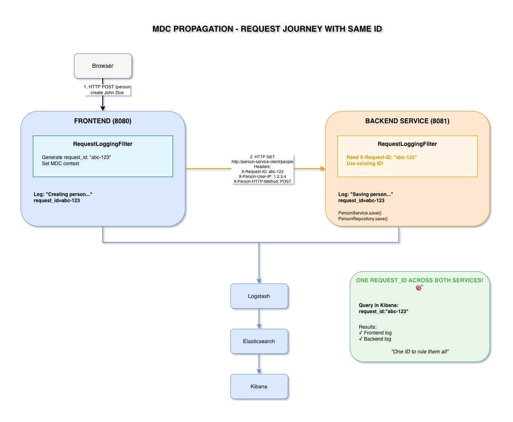

Following a Request Across Services
See how a single request_id tracks the entire journey from frontend to backend.

The Power of Correlation IDs
One ID to Rule Them All
A correlation ID (we call it request_id) is a unique identifier
that follows a request through its entire journey across all services.
This simple concept is the foundation of distributed tracing in microservices.
How request_id Flows Through Our System
Step 1: Browser → Frontend
- User makes request to Frontend (e.g., create a person)
- RequestLoggingFilter intercepts the request
- Generates UUID:
abc-def-123-456 - Sets MDC values:
request_id,user_ip,http_method,request_uri - All Frontend logs now include these values automatically
Step 2: Frontend → Backend
- Frontend needs to call Backend service
- MdcPropagationInterceptor intercepts RestTemplate call
- Reads MDC values from current thread
- Adds HTTP headers:
X-Request-ID: abc-def-123-456X-Person-User-IP: 192.168.1.10X-Person-HTTP-Method: POSTX-Person-Request-URI: /people
- Sends HTTP request with these headers
Step 3: Backend Receives Request
- Backend receives HTTP request with headers
- RequestLoggingFilter intercepts the request
- Checks for
X-Request-IDheader - If present: uses propagated value
abc-def-123-456 - If absent: generates new UUID
- Sets MDC with same values
- All Backend logs now include the same
request_id!
Step 4: Result - Unified Logging
- Frontend logs:
request_id: abc-def-123-456 - Backend logs:
request_id: abc-def-123-456 - Same ID in logs from BOTH services!
- Query Kibana for this ID → see complete request journey
Querying in Kibana
Find All Logs for One Request
request_id: "abc-def-123-456"This single query returns:
- Frontend logs: request received, validation, calling backend
- Backend logs: request received, database query, response sent
- Complete timeline of events
- All context: user IP, HTTP method, endpoint
Result: See the entire request journey in chronological order!
Real-World Example
Debugging a Failed Request
Scenario: User reports "I tried to create a person but got an error"
Without request_id:
- Search Frontend logs for user's IP
- Find timestamp of error
- SSH into 3 Backend instances
- Grep logs around that timestamp
- Try to correlate manually
- Time: 30+ minutes, lots of guessing
With request_id:
- Copy
request_idfrom error response - Query Kibana:
request_id: "abc-def-123-456" - See complete flow: Frontend → Backend → Database
- Find root cause: Database constraint violation
- Time: 2 minutes, no guessing
Implementation Highlights
RequestLoggingFilter
- Lives in
spring-boot-commonmodule - Shared by Frontend and Backend
- Checks for propagated headers first
- Generates new UUID if not present
- Sets MDC values automatically
MdcPropagationInterceptor
- Lives in
spring-boot-frontmodule - Implements
ClientHttpRequestInterceptor - Intercepts all RestTemplate calls
- Reads MDC, adds as HTTP headers
- Transparent to application code
Key Takeaways
- Single request_id tracks entire request journey across services
- HTTP headers propagate context between Frontend and Backend
- Query Kibana for request_id to see complete flow
- Distributed tracing made simple with MDC + HTTP headers
- Debugging time reduced from 30+ minutes to under 2 minutes